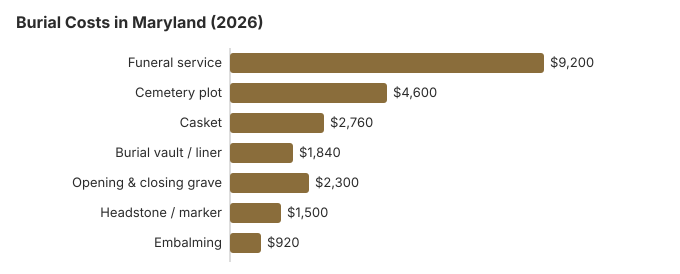

Burial Costs in Maryland (2026)
Burial costs in Maryland are shaped by three separate bills: the funeral home's service fee (around $9,200), the cemetery's plot and interment charges (starting near $4,600), and the headstone or marker (typically $500–$5,000).
Maryland Burial Costs by Item
| Item | Average Cost | Range |
|---|---|---|
| Funeral service | $9,200 | $6,900 – $11,960 |
| Cemetery plot | $4,600 | $2,300 – $9,200 |
| Casket | $2,760 | $920 – $7,360 |
| Burial vault / liner | $1,840 | $800 – $10,000 |
| Opening & closing grave | $2,300 | $500 – $3,000 |
| Headstone / marker | $1,500 | $500 – $5,000+ |
| Embalming | $920 | $500 – $1,500 |
How the Maryland burial numbers were built: they come from our model rather than a survey of Maryland funeral homes or cemeteries; weigh any quote against them, and do not read them as quotes or as advice. See our method and the disclaimer.

On our estimates a Maryland burial, cemetery charges included, runs from about $21,200 to $25,700; the casket, vault and plot account for most of the difference.
How Maryland Burial Compares With the Region
If a death happens in cold weather, ask the Maryland cemetery in writing whether a burial date or price changes. The cemetery's own charges are not covered by the FTC Funeral Rule, so get them on paper before you commit.
Burial Resources
- Funeral Consumers AllianceNonprofit consumer advocacy for funeral pricing
- Headstone & Monument GuideCosts, types, and buying tips
- Green Burial OptionsEco-friendly and natural alternatives
- Best Online Casket RetailersCaskets bought online often cost less
- Best Burial InsuranceCompare plans to cover burial expenses
Compare Funeral Costs
- Average Funeral Cost in 2026National cost breakdown with real prices
- Cremation vs. Burial Cost ComparisonSide-by-side price comparison to help you decide
- Funeral Cost BreakdownEvery line item explained: know what you're paying for
- Cheapest Funeral OptionsLower-cost alternatives, with typical price ranges
- Direct Cremation: Most Affordable OptionNFDA 2023 median $2,645 with a family-supplied container (latest available)
- How to Compare Funeral PricesStep-by-step guide to getting the best price
How to Reduce Burial Costs in Maryland
Ways to bring a Maryland burial bill down:
- Request itemized pricing from every provider: Funeral homes in Maryland must provide a General Price List. Cemeteries are not required to, but most in the Maryland area will share one if you ask specifically for the itemized price sheet rather than a "package."
- Get seasonal fees in writing: ask any Maryland cemetery whether it charges extra for interment in winter months, and have the amount written down.
- Denominational and municipal cemeteries: church-run and public cemeteries set their own plot prices, so include at least one of them when you collect Maryland quotes.
- Compare cemeteries beyond the first one you call: each Maryland cemetery prices its own plots, so a cemetery farther from Baltimore may charge less for the same type of grave.
Choosing a Type of Burial in Maryland
Frequently Asked Questions
What do Maryland families spend on burial?
Typical Maryland burials total between $21,200 and $25,700. Of that, the Maryland funeral service runs about $9,200, the cemetery plot $4,600, the casket around $2,760, the vault $1,840, opening-and-closing $2,300, and a headstone $500-$5,000.
Do I need a vault for burial in Maryland?
The Maryland Office of Cemetery Oversight says that state law does not require a vault for burial, but that a cemetery may, and most Maryland cemeteries do. Each cemetery's rules decide what kind of container goes in the grave and who may install it.
A vault or liner adds about $1,840 to a Maryland burial on this page's table. If you buy one in advance through a Maryland cemetery's preneed contract, the seller must disclose the vault or liner price and any installation fee in writing; the Office of Cemetery Oversight handles complaints about registered cemeteries.
What are the cheapest burial options in Maryland?
Direct (immediate) burial skips embalming, viewing and a ceremony at the funeral home, so it is usually the lowest-cost burial on a Maryland price list. You may supply your own casket in Maryland; the FTC Funeral Rule forbids a handling fee for it. A VA national cemetery burial costs eligible Maryland veterans nothing for the plot, opening and closing, or headstone.
How do cemetery prices differ across Maryland?
Plots, opening and closing, and vault rules are priced separately at Maryland cemeteries, and because the FTC Funeral Rule reaches funeral homes rather than most cemeteries, a written itemized list may not be mandatory; request one regardless. Baltimore National Cemetery is among the VA national cemeteries in the state. State law does fix the paperwork: under Md. Health-Gen. §4-215, the mortician must obtain a burial-transit permit within 72 hours of death, no cemetery may accept a body without one, and the cemetery writes the lot and space number on the permit and files it within 10 days.
Once I add every line item, what does burial actually cost in Maryland?
A complete burial in Maryland (funeral service ($9,200) + plot ($4,600) + casket ($2,760) + vault ($1,840) + opening-and-closing ($2,300) + headstone ($500-$5,000)) totals $21,200 to $25,700 in practice.
Is green burial available in Maryland?
Yes. Serenity Ridge Cemetery at 2406 Ridge Road in Windsor Mill, west of Baltimore, opened in January 2023 as a natural burial ground certified by the Green Burial Council. It falls under Maryland's Office of Cemetery Oversight, the same agency that regulates the state's other registered cemeteries.
Maryland law already helps on the funeral-home side: under Health-General § 5-513, no body may be embalmed without the family's express permission, and an outside casket or shroud cannot carry a handling fee under the FTC Funeral Rule. Most other Maryland cemeteries require a vault, so ask before assuming one will accept a natural burial.
More for Maryland
Getting to a family grave on someone else's land in Maryland
Maryland gives relatives a formal way to reach graves on private land. A person in interest can ask the owner for reasonable access to restore, maintain or view a documented or recognized burial site. That includes a blood relative or in-law, a domestic partner, or someone with a cultural affiliation to the person buried there. If burials are still happening at the site, relatives and heirs can also ask for access to bring remains there for burial (Md. Code, Real Prop. § 14-121; checked October 29, 2026).
- The written agreement: the law includes a sample "Permission to Enter" form. Once the landowner signs an agreement, they must give access on its terms.
- Liability: visitors are responsible for any damage they cause, and the landowner is not liable for visitors' injuries except for willful or malicious acts.
- On the tax map: anyone can report a burial site's location, with supporting documentation, to the county supervisor of assessments, who may note it on the county tax map.
Burial rules and help in Maryland
For a license check or complaint about a funeral home arranging a burial in Maryland, call the Maryland Department of Health at 410-764-4792; Maryland cemeteries can have a separate regulator.
Maryland is not on the Funeral Consumers Alliance list of nine states that require a funeral director, so a family may handle a burial itself, provided it has the burial permit and follows the cemetery's own rules for the grave.
No cremation wait affects a burial, but if plans change to cremation, a 12-hour wait applies (Md. Health-Gen. § 5-503).
For a Maryland burial, the $650 state payment survives if family or friends buy the plot, vault and grave digging, since those are left out of the $2,500 limit (COMAR 07.03.20.03). (Source: COMAR 07.03.20.03.) A surviving spouse or child may claim Social Security's one-time $255 death payment within two years; it is paid to them, not to the Maryland cemetery.
For Maryland veterans, the plot and marker in a national cemetery are free, which can remove thousands from a burial bill. In Maryland, VA national cemeteries accepting burials: Baltimore National Cemetery (410-644-9696, cremated remains only); state veterans cemeteries: Cheltenham Veterans Cemetery (301-372-6398); Crownsville Veterans Cemetery (410-987-6320); Eastern Shore Veterans Cemetery (410-943-3420); Garrison Forest Veterans Cemetery (410-363-6090); Rocky Gap Veterans Cemetery (301-777-2185) (source: VA National Cemetery Administration).
Next steps for a burial in Maryland
- Price the cemetery and the funeral home separately in Maryland: the plot, grave opening and marker come from the cemetery, so get at least two quotes for each.
- Ask whether the Maryland cemetery lets you buy the headstone elsewhere.
- Have family pay the plot or vault directly in Maryland so it stays outside the $2,500 Burial Assistance limit.
- For a veteran, call Crownsville Veterans Cemetery first and ask which documents it wants; the DD214 discharge record is normally one of them.
- A Maryland funeral home that misstates burial prices can be reported to the state board at 410-764-4792.